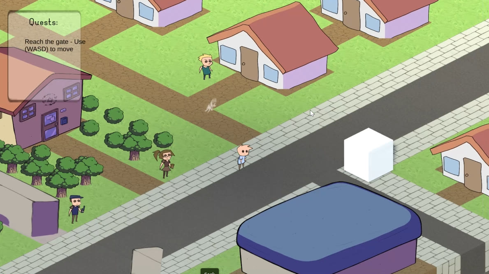

Unity · C#
Shards
Isometric story-driven game

Unity · C#
Isometric story-driven game
A man goes back to his hometown to face what happened there.
// Types the page out letter by letter and raises events other systems hook into:
// talking sounds and the speaker's mouth animation listen to onLetterTyped / onWordTyped.
private IEnumerator TypeText()
{
if (_isCoroutineRunning)
{
Debug.LogWarning("Coroutine is already running.");
yield break;
}
_isCoroutineRunning = true;
_textBuilder.Length = 0; // reuse one StringBuilder, no per-letter strings
int characterCount = _fullText.Length;
for (int i = 0; i < characterCount; i++)
{
onLetterTyped?.Invoke();
if (_fullText[i] == ' ')
onWordTyped?.Invoke();
_textBuilder.Append(_fullText[i]);
textMeshProUGUI.text = _textBuilder.ToString();
if (IsFinishedText()) yield break; // raises onFinishedText
for (int j = 0; j < (int)(typingSpeed * 60); j++)
yield return _waitForEndOfFrame; // cached, no allocation per frame
}
}
// Each page type decides what happens when it is shown.
[CreateAssetMenu(fileName = "New Page", menuName = "Page/DialoguePage")]
public class DialoguePage : Page
{
public string[] Options;
public Page[] Pages; // where each answer leads
public override void PageAction(SpeechBubbleUI speechBubbleUI)
{
speechBubbleUI.SetDialogueOptions(this);
speechBubbleUI.SetButtonInteractable(speechBubbleUI.NextButton, false);
}
}Trimmed and commented for this page.
Conversations are data, not code.
Developed during a three-week hackathon in November 2023 and inspired by the October 7th attack on Israel, this story-driven game follows an adult returning to his hometown to confront unresolved trauma.
The team aimed for a colorful yet unsettling atmosphere, reflecting distorted memories and haunting experiences.
Credits. Art and animation by the team's artists. I'm not an artist: I was mainly the programmer, with some game design.